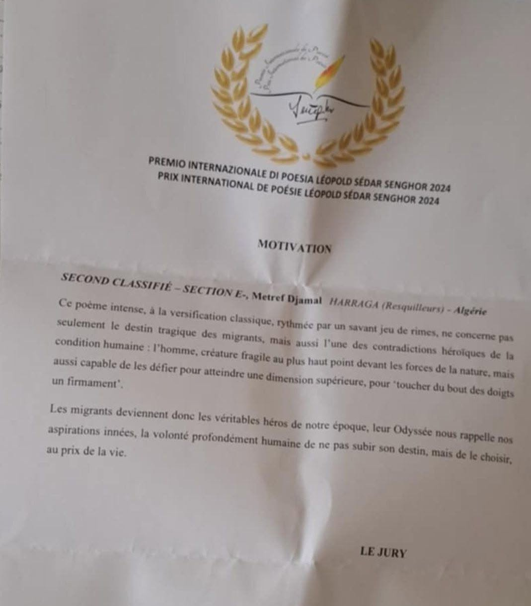

Mes quatre poèmes en lice
Section D — Thème libre
1. LA DANSE DES SAISONS
2. CQFD
Section E — Émigration et environnement
3. EXIL
4. HARRAGA
Du choix des finalistes au résultat définitif
Le procès-verbal de sélection, publié le 22 février 2025, annonce la présence de mon poème parmi les finalistes de la section E. Il ne constitue pas encore le classement final.
Le procès-verbal définitif, publié le 11 mai 2025 à la suite de la cérémonie, confirme ma deuxième place dans cette section.
Extrait du procès-verbal définitif :
« Classé Second : Metref Djamal, Harraga (Resquilleurs) – Algeria »
Les deux procès-verbaux complets sont consultables sur le site officiel du prix, grâce aux liens ci-dessous.
HARRAGA, deuxième prix à Milan
Deuxième place · Environnement et Migrations · Dixième édition
Je l’avais complètement oublié, celui-là ! Le 19 octobre, je m’étais inscrit à la dixième édition — année 2024 — du Prix international de poésie « Sur les traces de Léopold Sédar Senghor », organisé par l’Académie internationale Léopold Sédar Senghor de Milan. J’y avais présenté quatre poèmes dans deux sections. D’abord retenu parmi les finalistes, mon poème « HARRAGA » a finalement obtenu la deuxième place dans la section « Environnement et Migrations ». Je n’ai malheureusement pas pu assister à la cérémonie du 10 mai 2025 à Milan, mais je tenais à partager ici cette nouvelle.
